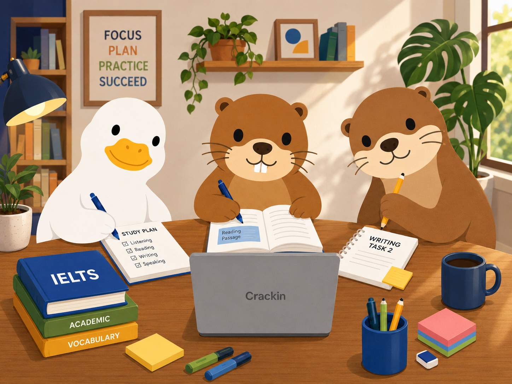

Listening
Accent drills, distractor spotting, map labeling, section pacing, and answer transfer habits.
All in one IELTS preparation for everyone, from people who have actually cracked IELTS!

Our classes are led by IELTS achievers who have been through the exam themselves, studied its patterns closely, and built strategies from real preparation experience. We are not here to give generic textbook advice. We know what works, what wastes time, and how different students need different study plans.
With guidance from all three of us, you get a complete IELTS prep system covering Listening, Reading, Writing, and Speaking, along with practical strategies, targeted feedback, mock practice, and clear study plans based on your goal.
Stop preparing like a lost explorer. When you join our course, you do not have to keep jumping between random YouTube videos, Reddit test experiences, confusing sample answers, and "Band 9 secret tricks" that somehow all say different things. We bring everything into one clear system, so you know what to study, how to practise, and what the exam actually expects from you.
IELTS is not just about knowing English. It is about knowing how to use English under exam pressure. Writing and Speaking especially do not work with a hardcoded, memorised-template mindset. Examiners can easily spot robotic answers. That is why we teach you how to think, structure, answer, and adapt naturally.
Reading can feel painfully long at first. Three passages, dense topics, tricky options, and a ticking clock can make even good students feel stuck. But often, the problem is not your English. It is the way you are approaching the paper. A simple shift in technique can completely change how the Reading section feels. We teach you when to skim, when to scan, how to handle question types, and how to stop wasting time on one stubborn answer.
Listening has its own drama. You miss one word and suddenly your brain starts acting like the whole exam is over. We teach you how to stay calm, recover quickly, follow the audio flow, and catch answers even when you miss a detail. IELTS Listening is not about understanding every single word. It is about tracking meaning, predicting answers, and staying in the game till the final second.
With the course, you also get access to a dedicated study Drive containing essential vocabulary, useful phrases, section-wise strategies, practice resources, and exam techniques that you can use like weapons on test day.
Every student keeps a band tracker for Writing, Speaking, Listening, and Reading. You see what changed, what is still weak, and what to do before the next class.
No vague English class energy. Each lesson maps to IELTS question types, timing, scoring rubrics, and the errors that keep candidates stuck.
Accent drills, distractor spotting, map labeling, section pacing, and answer transfer habits.
Skim-scan routines, keyword traps, True/False/Not Given logic, and paragraph matching strategy.
Task 1 structure, Task 2 planning, grammar range, vocabulary precision, and line-by-line corrections.
Fluency routines, cue-card practice, pronunciation coaching, and mock interviews with band notes.
Whether your exam is around the corner or you are aiming for a standout score, each plan gives you a clear target, timeline, and preparation rhythm.
For urgent test-takers who need focused, no-nonsense preparation in a jiffy. We cover high-impact strategies, common traps, writing structures, speaking confidence, and mock-test corrections so you walk into the exam with a clear plan instead of panic.
Best for: urgent university deadlines, visa timelines, last-minute exam bookings, and students who need quick direction.
For students who have two months or more and want to build IELTS skills properly. This plan focuses on exam finesse: better accuracy, stronger writing, smoother speaking, sharper listening, and smarter reading.
Best for: PR clearance, visa approval, university admission, job requirements, and students who want a reliable Band 7.0 plan.
For high scorers aiming beyond basic eligibility. We focus on advanced writing control, precise vocabulary, natural speaking fluency, reading speed, listening accuracy, and a deeper grasp of what the test is really measuring.
Best for: scholarships, competitive university applications, top-tier admission profiles, and students who want to stand out.
Not every student fits into one fixed box. This plan is customised around your target band, current level, timeline, weak areas, and purpose across Writing, Speaking, Reading, Listening, or all four.
Best for: flexible schedules, section-wise improvement, retakers, working professionals, school students, and anyone who wants a personalised IELTS roadmap.
Mix live teaching, guided self-study, and feedback loops so practice actually turns into score movement.
Small batches, fixed weekly rhythm, skill-specific lesson plans, and homework review.
Best for consistencyPrivate speaking, writing corrections, custom grammar repair, and deadline-led planning.
Best for fast gapsTimed practice, band estimate, mistake log, and a next-week repair plan after each mock.
Best before exam dayPick the preparation track that matches your timeline, score goal, and reason for taking IELTS.
₹9,000
For students who need results quickly and have their exam coming up soon. This is a fast-track plan focused on high-impact IELTS strategies, common mistakes, mock practice, writing structures, speaking confidence, and exam-day execution.
₹10,000
For students who have around two months or more and want to build IELTS skills properly. This plan focuses on steady improvement, exam finesse, better accuracy, stronger writing, smoother speaking, sharper listening, and faster reading.
₹14,000
For students aiming for a high IELTS score across all four sections. This plan goes deeper into advanced writing control, precise vocabulary, natural speaking fluency, reading speed, listening accuracy, and section-wise refinement.
₹4,500per month
For students who do not need a full IELTS course and want to focus only on specific weak areas. Choose the section you need and train with targeted practice, feedback, and a clear improvement roadmap.
For students struggling with Task 1, Task 2, essay structure, coherence, vocabulary, grammar, and band-specific writing improvement.
For students who want better accuracy, faster solving speed, stronger question analysis, and smarter strategies for traps in Listening and Reading.
For students who want to sound more fluent, natural, confident, and structured in the speaking test without memorised answers.
Share your current level, deadline, and target score. You will get a suggested course track, class schedule, and the first three things to fix.
Quick answers before you book.
Yes. Listening and Speaking overlap, while Reading and Writing are trained with separate question types and task formats.
Yes. Beginners can choose the 8-week Band 7.0 plan or a Custom IELTS Plan so grammar, vocabulary, and exam timing improve together.
Yes. Writing support is built around IELTS Task Achievement, Coherence, Lexical Resource, and Grammar criteria.
Private coaching and weekend mock reviews are available for candidates who study around shifts or office hours.